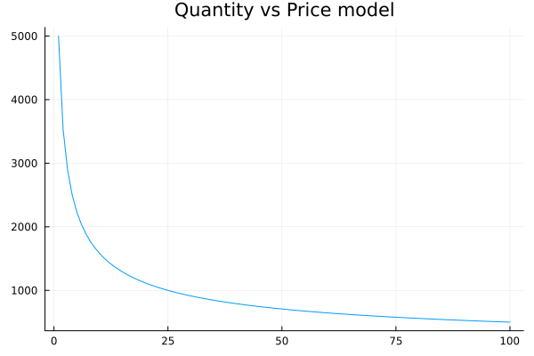
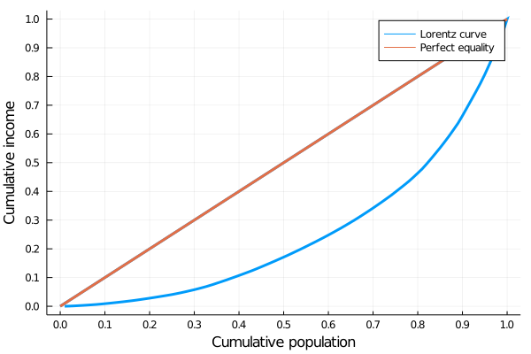
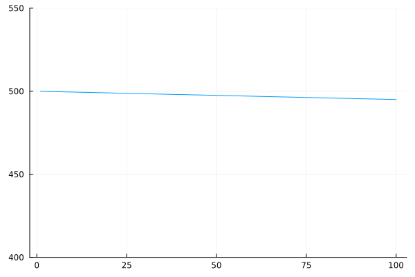
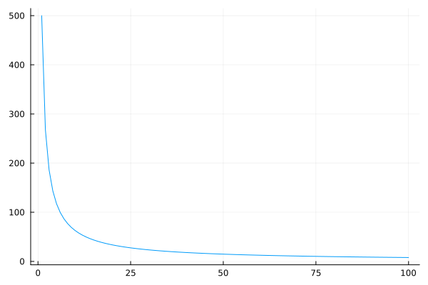
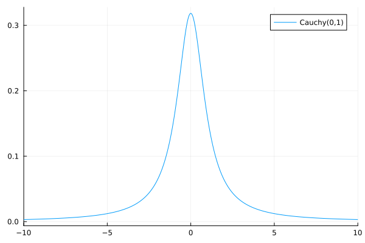
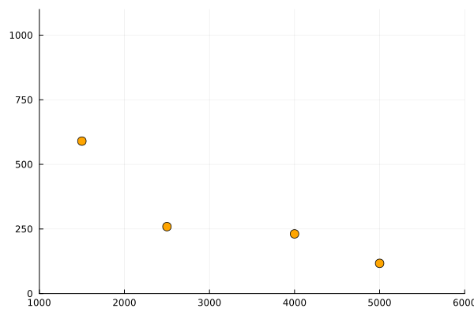
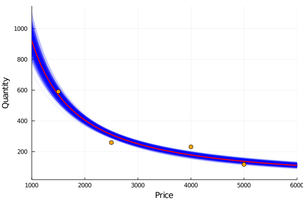
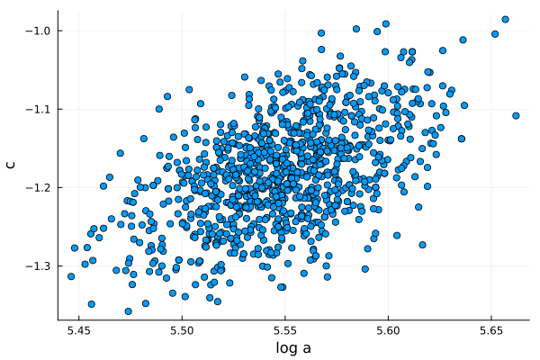
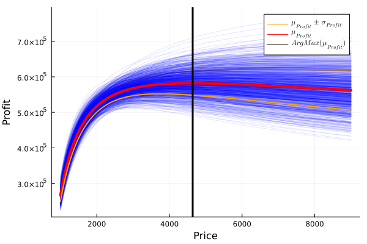
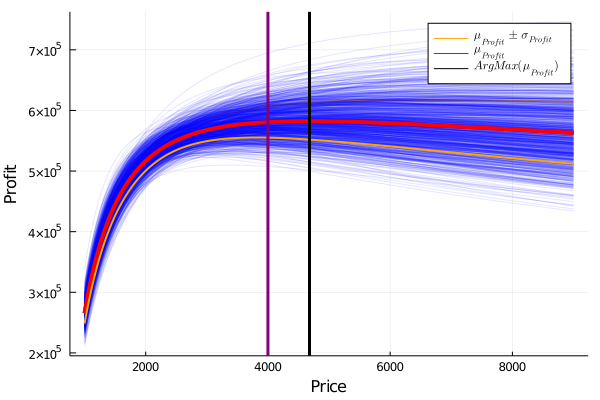

Chapter 9 Optimal pricing
cd("./09_optimal_pricing/")
import Pkg
Pkg.activate(".")
using Markdown
using InteractiveUtils
using Plots
using Turing
using StatsPlots
using LaTeXStrings9.1 Overview
In a Bayesian framework we can work intrinsically with the uncertainty of the data. It allows us to include it in our models. This is especially beneficial when we want to make a decision based on the results of a model. In this type of problem, if we optimize the expected value of the function we want to maximize, we obtain just a number, losing all the information and richness uncertainty can give us.
In real-life scenarios, when making decisions we almost never have all the necessary information and therefore we have to deal with uncertainty. So it’s important to be able to take into account how certain we are of the information we have. It may be the case that the value that maximizes (or minimizes) certain problem comes with a lot of uncertainty so it would be more appropriate to choose other with a better optimization-uncertainty trade off.
Bayesian inference allows us to do this because of its approach of a statistical problem. From its point of view, the data obtained on an event is fixed. They are observations that have already happened and there is nothing stochastic about it. So the data is deterministic.
On the contrary, the parameters of the models we propose to describe such data are stochastic, following a given probability distribution. In this way, the inference that is made is on the complete distributions of our parameters, which allows us, precisely, to include the uncertainty into our models.
Before starting we want to thank Chad Scherrer since this chapter is inspired by his article"
9.2 Optimal pricing
Pricing a product is not an easy task. Multiple factors intervene in a customer’s decision to buy a product. Also, a price can be fixed for some unknown business’ decision. Now suppose you have a new product you want to introduce in the local market and you need to set a price for it. Also, as a businessman, you want to have the maximum profit.
If the kind of product you intend to produce were already in the market, you could use this information to have an initial guess. If the price is too high, you probably won’t sell much. Conversely, if it’s too low, you probably sell more, but since the production process has an associated cost, you have to be careful and take it into account when you do the math.
9.2.1 Price vs Quantity model
We are going to use a known equation to model the relationship between price of a product and the quantity demanded, the equation (1). The figure 1 shows its behavior for some value of a and c. This equation tells us that the higher the price, the less we sell, and if we continue raising the price, eventually our product it’s so expensive that nobody is interested.
begin
a_ = 5000
c_ = -0.5
P_ = 1:100
Q_ = a_.*(P_.^c_)
plot(P_, Q_, legend=false, title="Quantity vs Price model")#: $Q=aP^c$")
xlabel!("Price")
ylabel!("Quantity")
end
You can imagine this as when you buy a luxury bread at the bakery:
In the beginning, if the price of this bread is very low, you will surely buy many of them, even giving some away so that others can try them. If one day you wake up and see that the price of this tasty bread is now double, you will surely stop buying too much and just concentrate on having it for a nice breakfast. Now, if a couple of months later the bakery became famous thanks to its delicious bread and they decided to sell it five times more expensive than before, you would start looking for another bakery.
9.2.1.1 Power law distributions
Okay, so we agree that our model has to express that as the price goes up the quantity tends to go down. However, one could ask why use a decreasing exponential function and not another one, for example a linear relationship with a negative slope.
The answer to this question is not straightforward. To start building an intuition, we must think about how people’s income is distributed.
Surely many of you have the main idea: income is not distributed equally across the population.
In general, a few people concentrate most of the income, and only a little of the income is distributed in the majority of the population. The distributions that describe this phenomenon are called ‘power laws.’ The best known is perhaps the Pareto distribution or 80-20 distribution. A distribution widely used in business management referring to the fact that, for example, 20% of the mix of products sold are those that generate 80% of the profits.
In economics this idea is presented with the Lorenz curve:
begin
function lorenz(y)
n = length(y)
y = sort(y)
s = zeros(n + 1)
s[2:end] = cumsum(y)
cum_people = zeros(n + 1)
cum_income = zeros(n + 1)
for i in collect(1: (n ))
cum_people[i] = i / n
cum_income[i] = s[i] / s[n]
end
return cum_people, cum_income
end
w = exp.(randn(100))
f_vals, l_vals = lorenz(w)
plot(f_vals, label="Lorenz curve",l_vals, l=3,xlabel="Cumulative population", xaxis=0:0.1:1)
plot!(f_vals, label="Perfect equality", f_vals, l=3, ylabel="Cumulative income",yaxis=0:0.1:1)
end
Lorenz curve. A graphical representation of income inequality.
In this graph, the x-axis represents the accumulated population and the y-axis the accumulated income. Going from left to right and as you move along the x-axis, more and more income is accumulated by fewer people. For example, the first 10% of the population barely accumulates 1% of income while the richest 10% on the right accumulates 40%. An ideal society with a perfectly distributed income would have a straight 45º Lorenz curve.
With this in mind we can already generate an intuition that will help us answer the initial question: why use a decreasing exponential and not a negative-slope line?
Well, since a great majority of people have a small relative income and a minority has a large one, as we increase the price of the product, a large number of people with low income can no longer afford it. This process continues until only people with a high income are left and their consumption preferences are not greatly affected by the price increase.
The exponential distribution is useful to describe this.
9.2.2 Price elasticity of demand
A very important factor to consider is the price elasticity of demand of the product in question. What does this mean? It relates how much the quantity demanded by customers of a product changes when its price is changed by one unit.
Mathematically, price elasticity is defined as:
\(e_{(p)}=\frac{dQ/Q}{dP/P}\)
For example, the price elasticity of demand of a medicine for a terminal illness is not the same as that of chocolate with peanuts.
While some might argue that chocolate is vital for their life, the difference between these two products is that users of the medicine cannot afford not to consume it. No matter how much the price increases, the nature of their need forces them to buy it anyway. It is said then that the medicine is inelastic, that is, it is not sensitive to price.
begin
a__ = 500
c__ = -0.05
P__ = 1:100
Q__ = a__.+ c__.*P__
plot(P__, Q__, legend=false, ylims = (400,550))
xlabel!("Price")
ylabel!("Quantity")
end
Inelastic demand of an important medicine. As it is vital for life the price hardly affects the quantity demanded On the contrary, if we see that the price of chocolates goes up a lot, we will probably stop consuming it, since it is not vital for our health. Well, that’s relative.
begin
a___ = 500
c___ = -0.9
P___ = 1:100
Q___ = a___.*(P___.^c___)
plot(P___, Q___, legend=false)
xlabel!("Price")
ylabel!("Quantity")
end
Possible demand curve for non chocolate lovers. As the price goes up the quantity goes down a lot. Perhaps you are wondering the importance of being able to have clarity about the elasticity of a product. To explain it, let’s remember how the sales (in money) we get when trading a product are calculated:
\(Sales = Quantity * Price\)
So it is vitally important to analyze how much one variable varies when moving the other.
It is evident that in the case of inelastic goods, it is always convenient to raise the price in terms of increasing the profit. On the other hand, when we work with a good that has some kind of elasticity, the increase generated by setting a higher price can be offset by an even greater drop in the amount sold. So we have to understand very well that behavior in order to define the optimal price level.
9.2.2.1 Dealing with uncertanty
Anyway, if our product is a new idea, the problem depicted above gets a lot more complicated if the product is brand new, an invention, and the approach it’s different. That’s the problem we are about to solve:
Suppose you are about to release a completely new and disrupting product. Your product is so different that you don’t have others to compare with, at least in the local market, so you are not sure about what price to choose. You don’t want to lose money of course, so you want the maximum profit you could get. To test the waters, a common choice is to run a pilot test, offering your product at different prices and see how customers react. So you record how much you sell at what price, but how do we proceed?
Now, given the model and the data available, we define it
So, given our exponential model to describe the relationship between the price of a good and the quantity demanded, We want to estimate its parameters:
\(Q = aP^{c}\)
In order to do this, an intelligent strategy is to linearize the relationship in order to perform a simple linear regression. Simply taking the logarithm of both sides of the equation achieves the goal:
\(log(Q)=log(a) + clog(P)\)
Now, the only thing left to do is to define the model in a Bayesian framework for Julia, called Turing, which is used to do probabilistic programming.
begin
@model function quantity(qval,p0)
loga ~ Cauchy()
c ~ Cauchy()
logμ0_ = loga .+ c*(log.(p0) .- mean(log.(p0)))
μ0_ = exp.(logμ0_)
for i in eachindex(µ0_)
qval[i] ~ Poisson(μ0_[i])
end
end
end## quantity (generic function with 1 method)How do we interpret this model?
9.2.2.2 Priors: our previous knowledge
Remember that Bayesian models always ask us to choose previous distributions for their parameters. In this particular example we propose that log a and c follow a Cauchy distribution. Why did we do this? Basically they are very flat distributions that are going to leave a lot of freedom for the model to learn from the data what the value of the parameters are.
begin
plot(-10:0.01:10,Cauchy(), xlim=(-10,10),label="Cauchy(0,1)")
plot!(Normal(), xlim=(-10,10), label="Normal(0,1)")
end
Normal and Cauchy distributions. The Cauchy distribution is said to be fat tailed as it allows for extreme values Is doing this the best choice? Definitely not. Having the possibility to choose the previous distributions allows us to introduce previous knowledge to our problem. For example, if you were doing a linear regression to find the relationship between people’s weight and their height, you could already “tell” the model that it would not make sense for the relationship to be negative, that is, it does not seem right to affirm that as a person weighs more, he or she would be shorter.
Another very important use of priors is to define the scale of the problem. In the example of height and weight it would be useful to say something like ‘It doesn’t make sense that for every additional kilogram of weight, a person will measure one meter more. At most a few centimeters.’ All this information can be communicated to our model through the priors we choose. Let’s leave it there for now.
Returning to the code. Julia allows us to easily define the variables that are probability distributions using the ~ operator. Once we know c and log a for a given value of price, we can univocally determine the quantity, therefore the variables \(\log(\mu_0)\) (and \(\mu_0\)) are defined with the = operator, indicating a deterministic relation.
In addition, since the quantity of product sold is a discrete one and it comes from adding independent purchases, they are modeled as a poisson distribution.
But why do we subtract the mean for the price values? It’s a good practice to avoid a common problem: multicollinearity. With multicollinearity, the models tend to be more certain about the plausible values of our model, meanwhile models with more normalized data are more conservative and they are less prone to overfitting, an unwanted effect we need to avoid if we expect our model to work good with new. As a rule of thumb, it is always good to standardize our data. That is, subtract their average and divide each by its standard deviation.
9.2.2.3 Updating our beliefs
In our problem, we said we have already recorded some points of the curve for our product. And to do it we simply run the pilot test, fixing a price and counting the amount of product we sold. We can infer employing this data the “demand curve,” then we can propose a profit function for the new product and finally find the price that maximizes our profit. In figure 2 we plot the points recorded in the pilot test. At first sight they seem to follow the expected relationship but it is not a perfect curve, right? They have some kind of “noise.” Well, after all we could say that the reality is noisy.
begin
#Our points from the pilot test
Price = [1500, 2500, 4000, 5000]
Quantity = [590, 259, 231, 117]
scatter(Price, Quantity, markersize=6, color="orange", legend=false, xlim=(1000,6000), ylim=(0,1100))
xlabel!("Price")
ylabel!("Quantity")
end
As we said, in a Bayesian framework our previous knowledge are the distributions we propose for each of the parameters and the relationship known between price and quantity.
With this Bayesian approach, our previous knowledge are the distributions we propose for each of the parameters and the relationship known between price and quantity. What we do now is to update our believes, incorporating in our model the data points we have recorded from our pilot test as show in the code bellow, instantiating our model with the points Quantity and Price. Our model now has computed what is called the posterior distributions for the parameters log a and c, our updated beliefs for the plausible values for this two parameters.
begin
model = quantity(Quantity, Price)
posterior = sample(model, NUTS(),1000)
end;begin
post_loga = collect(get(posterior, :loga))
post_c = collect(get(posterior, :c))
hist_loga = histogram(post_loga, normed=true, bins=20, label = false, xlabel="log a")
hist_c = histogram(post_c, normed=true, legend=false, bins=20, xlabel="c")
plot(hist_loga, hist_c, layout=(1,2))
end
Posterior distributions for the parameters log a and c. Let’s stop for a moment and analyze this. We defined our model and asked Turing to return the best possible estimate of our parameters, taking into account our initial beliefs and the information obtained from the pilot test, and what Turing returned was a distribution of possibilities for those parameters.
But, our model is defined by a single value of a and c. So what do we do? One option would be to take the mean of our distributions.
mean(post_loga[1])## 5.546444583138311mean(post_c[1])## -1.1808080259045772So Log(a) would be 5.55 and c -1.18, and we should only have to replace those values in our model equation to get the answer to our problem:
$ Log(Q)=5.55 - 1.18Log(P) $
This would make sense? Not even close. By doing this we would be throwing away a lot of precious information that the Bayesian framework gives us: The uncertainty about our inference.
9.2.2.4 Making uncertainty our ally
Instead of getting rid of the uncertainty of our measurements, we have to use them to our advantage. This way instead of keeping only one model, we will use all possible models that can be built having the distributions of their parameters. That is, to sample our parameter distributions and build different models with each combination of them. Let’s see it:
begin
p = range(1000,9000,step = 10);
q = zeros(length(p),length(post_c[1]))
for i in collect(1:length(post_c[1]))
q[:,i] = exp.(post_loga[1][i] .+ post_c[1][i] .* (log.(p) .- mean(log.(Price))))
end
endHere we are creating an array of as many rows as price values we want to observe and with as many columns as samples we have of each of our log and c parameters, that is, as many columns as models we have at our disposal. Let’s plot them all and see what happen:
begin
plot(p,q[:,1], xlim=(1000,6000))
for i in collect(1:length(post_c[1]))
plot!(p,q[:,i], color="blue", legend=false, alpha = 0.1)
end
plot!(p, mean(q, dims=2), color="red", lw=2)
scatter!(Price, Quantity, color="orange", markersize=5)
ylabel!("Quantity")
xlabel!("Price")
end
In this way we can visualize all the possible models that our Bayesian inference gives us. Since values of log a and c with higher probability will be sampled more often, the density of lines give us a sense of plausibility, and therefore we can evaluate the certainty (or uncertainty) of our model for a given value of price. We also highlight in red the average quantity obtained taking into account all the different models.
As a last check (even if we have already taken preventive measures), we want to make sure that our model parameters do not share information. That is, we want to check that there is no collinearity between them.
To evaluate multicollinearity between the two parameters of our model, we plot the sampled values, one against the other. In figure 4, we don’t see a pattern, they seem to be decorrelated, therefore multicollinearity is not present in our model, so we are good to go and we can continue with the problem.
begin
scatter(post_loga, post_c, legend=false)
xlabel!("log a")
ylabel!("c")
end
Parameters c vs log a for sampled values from the posterior distributions.
As you can see, the point cloud is well dispersed so multicollinearity is not going to be a problem for us.
9.3 Maximizing profit
Now that we have estimated our posterior distributions, we will try to answer the following question: what is the price that will give us the maximum profit?
This is why we calculated the relationship between the price and the quantity of our product. As we said before, depending on that relation, it was going to be possible to define an optimal price point. Now we only have to add one more part to the equation: the production costs.
Having this, we will be able to set up our profit function that will tell us, for each price we choose, how much money we would expect to earn. So let’s define it:
As many of you know, the profit on the sale of a product is calculated as income minus costs.
\(Profit=Price * Quantity - Cost\)
But also the cost can be divided between the one that doesn’t depend on the production and I always have, and the one that does.
For example, the costs of renting the warehouse, the salaries of the administrative workers or the insurance will not vary if 3000 or 5000 units are produced. This is why they are called fixed costs. On the other hand, the costs of raw materials, packaging or distribution; if they depend on the quantity produced, so they are included in variable costs.
\(Profit=Price * Quantity - (VariableCost * Quantity + Fixed Cost)\)
begin
fixed_cost = 10000
k = 700
var_cost = k .* q
total_cost = var_cost .+ fixed_cost
profit = p .* q .- total_cost
end;Now we can plot the profit for many sampled values from the posterior distributions of our model and find the maximum.
mxval, mxindx = findmax(mean(profit, dims=2); dims=1);mxval[1]## 580629.7407600599With the unfavorable (or favorable) case of:
unfav = mxval[1] - std(profit[mxindx[1][1], : ])## 551273.5077073544fav = mxval[1] + std(profit[mxindx[1][1], : ])## 609985.9738127654begin
s = latexstring("\\mu_{Profit}")
s2 = latexstring("\\mu_{Profit} \\pm \\sigma_{Profit}")
s3 = latexstring("ArgMax(\\mu_{Profit})")
plot(p,mean(profit, dims=2) + std(profit, dims=2), color = "orange", lw=2, label =s2)
plot!(p,mean(profit, dims=2), color = "red", lw=4, label="")
for i in collect(1:length(post_c[1]))
plot!(p,profit[:,i], color="blue", label=false, alpha = 0.1)
end
plot!(p,mean(profit, dims=2), color = "red", lw=4, label=s)
plot!(p,mean(profit, dims=2) - std(profit, dims=2), color = "orange", lw=2, label="")
vline!(p[mxindx], p[mxindx], line = (:black, 3), label=s3)
xlabel!("Price")
ylabel!("Profit")
plot!(legend=true)
end
Profit for sampled values, highlighting the mean, a deviation from the mean and the maximum mean profit. In this way, not only do we have the information about the average profit (marked in red), but we also have a notion of the uncertainty that the model handles. As you can see in the graph and remembering that the highest price value we had in the pilot test was $5000, the uncertainty increases a lot for higher values, reflecting the lack of data.
Then, analyzing the graph:
The red line plotted is the mean expected profit and its maximum is near $4840. The region between the orange lines is approximately one standard deviation far from the expected value or where the 65% of the lines, plotted from the sampled values of our parameters, fall.
With this in mind and seeing that the profit curve is quite flat in the sector where the maximum is found, one could argue that it is preferable to choose a lower price since the money lost would be minimal, but the volatility would go down considerably.
In order to see this, it would be interesting to graph the standard deviation of the profit according to the price we choose:
std_p = [std(profit[i, : ]) for i in collect(1:length(p))];plot(p,std_p, legend=false, xlabel = "Price", ylabel= "Std deviation of profit", lw=2)
Looking at both graphs we can see that, while the average profit is flattened, the standard deviation of it always goes up, corroborating that lowering the price can be a good strategy For example, let’s look at the case where an alternative price of $4000 is chosen:
quantity_at_4000 = q[findfirst(isequal(4000), p), : ]
;#Sales minus costs for every model at price of $4000
profit_4000 = 4000 .* quantity_at_4000 .- (10000 .+ quantity_at_4000 .* 700);#A faster way:
prof_4000 = profit[findfirst(isequal(4000), p), :];mean_prof_4000 = mean(profit_4000)## 579251.5221961857With the unfavorable (or favorable) case of:
unfav_4000 = mean(profit_4000) - std(profit_4000)## 554168.5339511412mean(profit_4000) + std(profit_4000)## 604334.5104412301begin
plot(p,mean(profit, dims=2) + std(profit, dims=2), color = "orange", lw=2, label =s2)
plot!(p,mean(profit, dims=2), color = "red", lw=4, label="")
for i in collect(1:length(post_c[1]))
plot!(p,profit[:,i], color="blue", label=false, alpha = 0.1)
end
plot!(p,mean(profit, dims=2), color = "red", lw=4, label=s)
plot!(p,mean(profit, dims=2) - std(profit, dims=2), color = "orange", lw=2, label="")
vline!([4000], [4000], line = (:purple, 3), label=false)
vline!(p[mxindx], p[mxindx], line = (:black, 3), label=s3)
xlabel!("Price")
ylabel!("Profit")
plot!(legend=true)
end
Then, by choosing a price of $4000 the average profit goes from $582800 to $58120. That is, a percentage variation of:
porcentual_profit_diff = ((mean(profit_4000) - mxval[1]) / mxval[1]) * 100## -0.23736616764930557While the most unfavorable case goes from $549705 to $553298.5. That is, a percentage variation of:
porcentual_std_diff = ( unfav_4000 - unfav) / unfav *100## 0.52515243401169 porcentual_std_diff / porcentual_profit_diff## -2.212414849228099So, for every dollar we “lost” in average profitability, we gained more than double in the reduction of uncertainty.
Regardless of each person’s decision, the important thing about the Bayesian framework is that it allows us to include uncertainty in our models and use it to our advantage to make more informed and intelligent decisions.
Instead of wanting to forget and get rid of uncertainty, Bayesianism allows us to accept that this is an inherent feature of reality and to take advantage of it. Being able to narrow down how sure we are about the inferences we make gives us an invaluable advantage when making decisions.
9.4 Summary
In this chapter we have learned some basic concepts of economics such as the price elasticity of demand for a product, or the Pareto distribution of income and wealth. Then, we estimated the demand curve of a possible new product, performing a pilot test to see the relationship between price and quantity demanded. Thanks to Bayesian inference we were able to use the uncertainty we had to our advantage, quantifying the trade-off between expected return and the variability of it, making possible to perform a well informed decision.